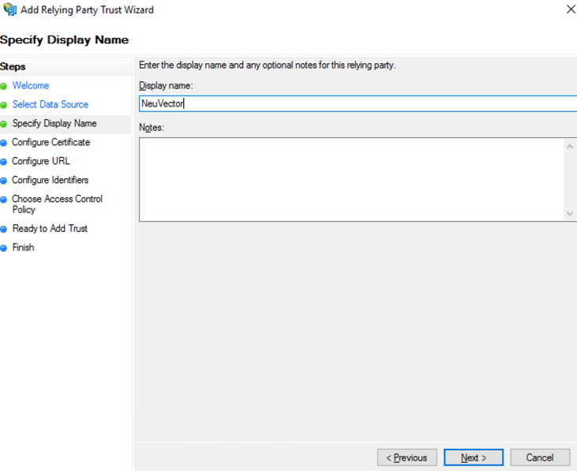
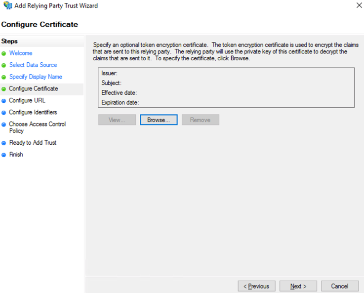
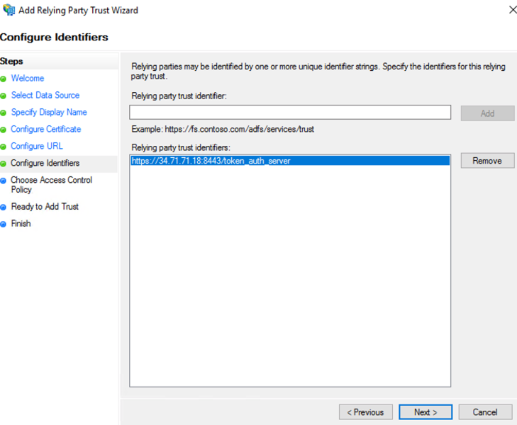
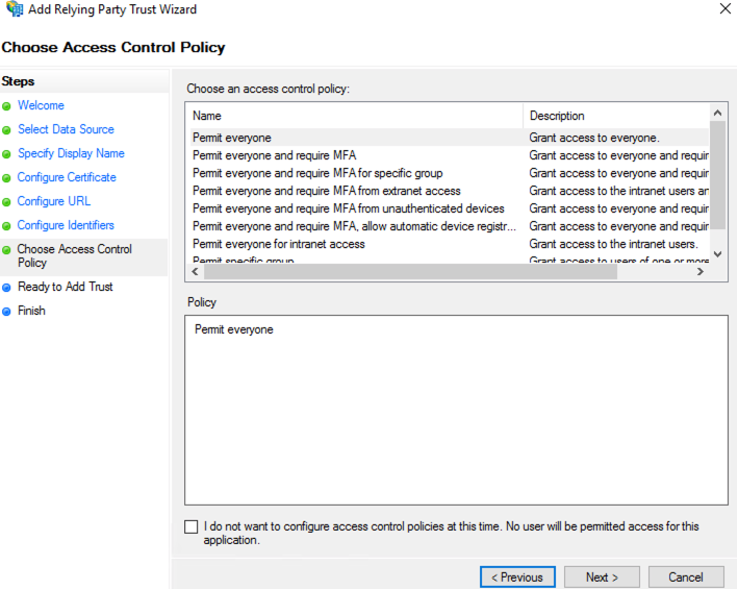
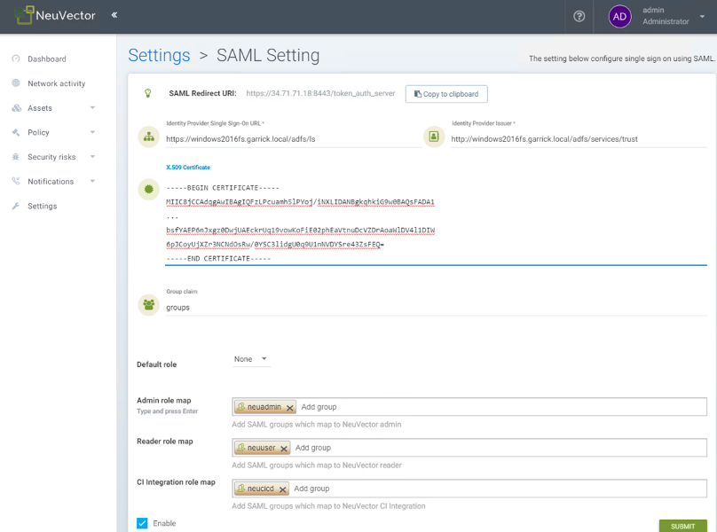
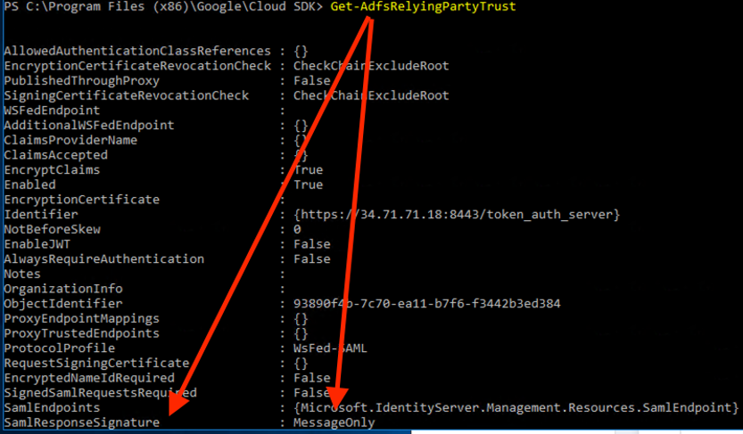

SAML (ADFS)
Einrichten von ADFS und SUSE® Security Integration
In diesem Abschnitt werden zunächst die Einrichtungsschritte in ADFS und dann in der SUSE® Security Konsole beschrieben.
ADFS Einrichtung
-
Klicken Sie im AD FS-Management mit der rechten Maustaste auf “Relying Party Trusts” und wählen Sie “Add Relying Party Trust…” aus.

-
Wählen Sie die Schaltfläche “Start” im Willkommensschritt aus.

-
Wählen Sie “Enter data about the relying party manually” aus und wählen Sie “Next” aus.

-
Geben Sie einen eindeutigen Namen für das Feld Anzeigename ein und wählen Sie “Next” aus.

-
Wählen Sie “Next” aus, um die Token-Verschlüsselung zu überspringen.

-
Überprüfen Sie “Enable support for the SAML 2.0 WebSSO protocol” und geben Sie die SAML-Redirect-URI von SUSE® Security Einstellungen > SAML-Einstellungsseite in das Feld “Relying party SAML 2.0 SSO service URL” ein. Wählen Sie “Next”, um fortzufahren.

-
Geben Sie dieselbe SAML-Redirect-URI in das Feld “Relying party trust identifier” ein und klicken Sie auf “Add”; wählen Sie dann “Next”, um fortzufahren.

-
Passen Sie die Zugriffskontrolle an; wählen Sie dann “Next”, um fortzufahren.

-
Wählen Sie “Next”, um fortzufahren.

-
Wählen Sie “Close”, um zu schließen.
-
Wählen Sie Bearbeiten der Anspruchsausstellungsrichtlinie …

-
Wählen Sie “Add Rule…” aus und wählen Sie “Send LDAP Attributes as Claims”; wählen Sie dann “Next”. Benennen Sie die Regel und wählen Sie Active Directory als Attributspeicher aus. Nur der ausgehende Anspruch für den Benutzernamen ist für die Authentifizierung erforderlich, wenn die Standardrolle festgelegt ist; andernfalls sind Gruppen für die Rollenzuordnung erforderlich. E-Mail ist optional.
-
SAM-Kontoname → Benutzername
-
E-Mail-Adresse → E-Mail
-
Token-Gruppen — Unqualifizierte Namen → Gruppen

-
-
Wählen Sie “Add Rule…” aus und wählen Sie “Transform an Incoming Claim”; wählen Sie dann “Next”. Benennen Sie die Regel und setzen Sie das Feld wie im Screenshot unten fest. Das ausgehende Name-ID-Format muss Transient Identifier sein.

SUSE® Security Setup
-
Identifizieren Sie die Anbieter-SSO-URL
-
Sehen Sie sich die Endpunkte in AD FS-Verwaltung > Dienst an und verwenden Sie die “SAML 2.0/WS-Federation” Endpunkt-URL.
-
Beispiel:
https://<adfs-fqdn>/adfs/ls
-
-
Identitätsanbieter-Aussteller
-
Klicken Sie mit der rechten Maustaste auf AD FS in der AD FS-Verwaltungskonsole und wählen Sie “Edit Federation Service Properties…”; verwenden Sie die “Federation Service identifier”.
-
Beispiel:
http://<adfs-fqdn>/adfs/services/trust
-
-
X.509-Zertifikat
-
Wählen Sie in der AD FS-Verwaltung Dienst > Zertifikat, klicken Sie mit der rechten Maustaste auf das Token-Signierungszertifikat und wählen Sie “View Certificate…”
-
Wählen Sie die Registerkarte Details und klicken Sie auf “Copy to File”
-
Speichern Sie es als eine Base-64-kodierte X.509 (.CER)-Datei.
-
Kopieren Sie den Inhalt der Datei und fügen Sie ihn in das X.509-Zertifikat-Feld ein.
-
-
Gruppenanspruch
-
Geben Sie den ausgehenden Anspruchsnamen für die Gruppen ein
-
Beispiel: Gruppen
-
-
Standardrolle
-
Es wird empfohlen, “None” zu verwenden, es sei denn, Sie möchten einem authentifizierten Benutzer eine Standardrolle zuweisen.
-
-
Rollenkarte
-
Legen Sie die Gruppennamen der Benutzer für die entsprechende Rolle fest. (Siehe Screenshot-Beispiel unten.)

-
Gruppen zu Rollen und Namespaces zuordnen
Bitte sehen Sie sich den Abschnitt Benutzer und Rollen an, um zu erfahren, wie Gruppen den vordefinierten und benutzerdefinierten Rollen sowie Namespaces in SUSE® Security zugeordnet werden.
Fehlerbehebung
-
Die ADFS SamlResponseSignature muss entweder MessageOnly oder MessageAndAssertion sein. Verwenden Sie den Befehl Get-AdfsRelyingPartyTrust, um dies zu überprüfen oder zu aktualisieren.

-
Zeitsynchronisierung zwischen Kubernetes-Knoten und ADFS-Server
Für eine erfolgreiche Authentifizierung muss die Zeit zwischen den Kubernetes-Knoten und dem ADFS-Server gleich sein, um Probleme mit der Zeitsynchronisierung oder Zeitabweichungen zu vermeiden.
Es wird empfohlen, einen NTP-Server zu verwenden, mit gleichen Zeiteinstellungen auf allen Servern.
Bitte überprüfen und bestätigen Sie, dass sowohl ADFS als auch SUSE® Security Hosts synchronisiert sind und die möglichen Verzögerungen 10 Sekunden nicht überschreiten. Sie können Linux- und Windows-Befehle verwenden, um Daten, Zeiten und die Aktivität des NTP-Servers zu überprüfen.
|
Sie können die Authentifizierungszeiten neu laden, indem Sie die Konfiguration im SUSE® Security UI wie folgt deaktivieren und wieder aktivieren:
Sobald die Einstellung wieder aktiviert wurde, können Sie versuchen, sich mit einem ADFS-Benutzer anzumelden. Wenn es funktioniert, bestätigt dies, dass das Problem auf einen Zeit-Synchronisierungsfehler zwischen den Kubernetes-Knoten und dem ADFS-Server zurückzuführen war. |
-
SAML-Zeichen müssen im SUSE® Security UI groß- und kleinschreibungsempfindlich sein.
Attributnamen sind groß- und kleinschreibungsempfindlich. Stellen Sie sicher, dass jeder hier konfigurierte SAML-Attributname mit der Anwendungskonfiguration genau übereinstimmt. SAML muss auf die korrekte URL zur Authentifizierung verweisen.
Alle Felder in
SUSE® Security UI → Settings → SAML Settingssind groß- und kleinschreibungsempfindlich.Die Protokolle des SUSE® Security Controllers enthalten die relevanten Informationen zur Authentifizierung mit dem ADFS-Server und Fehler, die helfen, die Ursache zu identifizieren. Wir empfehlen, die fehlgeschlagene Anmeldebedingung erneut zu erstellen und die Protokolle zu überprüfen.
-
Stellen Sie sicher, dass Sie die richtigen Gruppen, Zertifikate und Protokolle eingeben.
Die SAML-Einstellungen müssen mit der folgenden Konfiguration übereinstimmen:
Einstellung Wert Identifizieren Sie die Anbieter-SSO-URL
Erfordert das HTTPS-Protokoll
Aussteller des Identitätsanbieters
Erfordert das HTTP-Protokoll
ADFS SamlResponseSignature
Muss entweder MessageOnly oder MessageAndAssertion sein.
|
Diese Einstellungen müssen auf Ihrem ADFS-Server und im SUSE® Security UI validiert werden. |
Das ausgewählte Zertifikat muss gültig und korrekt erstellt sein, einschließlich seiner CA Root und Intermediate Certificates. Sie können sie mit Ihrer vertrauenswürdigen Zertifizierungsstelle, Windows oder einem Automatisierungstool wie LetsEncrypt generieren.
Wenn einer dieser Parameter falsch ist, erhalten Sie einen Authentication Failed Fehler, wenn Sie versuchen, sich mit einem ADFS-Benutzer über SAML-Authentifizierung bei SUSE® Security anzumelden.